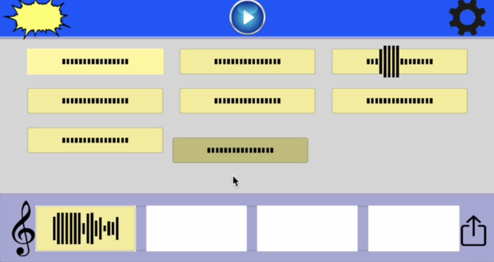
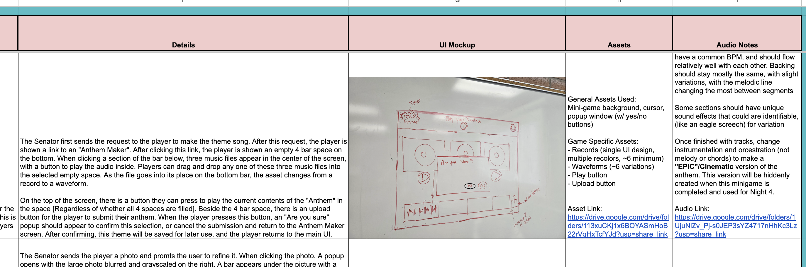
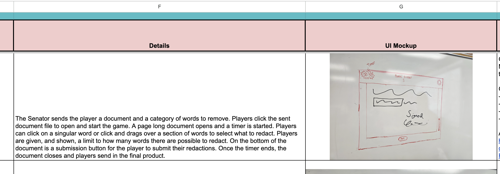

Large Language Mimic

Open Alpha USC
Open Alpha (OA)'s Large Language Mimic
Unity Engine | Gameplay Programming | Minigames | Mentorship
Large Language Mimic is a satirical narrative game where the player takes a job at a fake-AI company and secretly completes tasks for an important political client while pretending to be an AI chatbot.
Across the week, players complete increasingly strange campaign-related assignments while learning more about their client and eventually deciding how the story ends.
- Role: Gameplay Programmer & Mentor
- Focus: Minigame Development, Gameplay Prototyping & Unity Mentorship
- Engine: Unity Engine
- Project Type: Narrative Minigame Experience
My Contributions
I worked as a gameplay programmer across several of the project's campaign-themed minigames, primarily developing the Anthem system while also contributing to the Speech and Redacting mechanics.
- Anthem Minigame: Developed the primary gameplay system for a GarageBand-inspired music creator where players arrange musical nodes into a custom campaign anthem.
- Speech Minigame: Developed the typing gameplay, including character-by-character input, typo detection and correction, and interactive word choices embedded throughout each speech.
- Redacting Minigame: Helped develop the document interaction system for selecting and redacting information from campaign files.
- Gameplay Prototyping: Translated minigame concepts into playable Unity Engine interactions and iterated on their functionality with the team.
Anthem Minigame
I primarily worked on the Anthem minigame, a music creation system where players construct a custom campaign anthem by arranging musical elements into a short sequence.
- Drag-and-drop musical nodes into a timeline
- Four-measure song structure
- Different tones and musical elements represented by individual nodes
- Shared BPM and key for musically compatible combinations
- Submit and save the completed anthem
- Player-created anthem can be reused later in the game
Anthem Minigame Design and to Life


Speech Typing Minigame
I developed the typing system for the Speech minigame, where the player transcribes a prepared campaign speech while maintaining the illusion that they are an error-free AI.
- Character Input: Built character-by-character typing that tracks the player's position through the prepared speech.
- Typing Feedback: Untyped characters begin grey and transition as the player successfully types through the speech.
- Typo Detection: Incorrect characters are highlighted in red.
- Error Correction: A typo prevents the player from continuing until they backspace and correct the incorrect character.
- Dynamic Word Choices: Fill-in-the-blank sections interrupt the typing flow and present the player with multiple possible words.
- Typing Integration: After selecting an option, the player types their chosen word before continuing through the speech.
- Choice Tracking: Player-selected words are recorded so the decisions can be used for consequences later in the game.
Speech Typing System
Redacting Minigame
I also contributed to the document-redaction mechanic, where players interact with files and selectively conceal information while completing their assigned campaign tasks.
- Interactive document-based gameplay
- Selection and redaction of information
- Campaign-themed task integration
- Integration with the larger narrative gameplay flow
Document Redaction

Gameplay Programming Mentorship
The development team used a mentor/mentee structure to help developers learn Unity Engine and become comfortable contributing to the project. I was assigned another developer as a mentee and supported them throughout development.
- Introduced my mentee to Unity workflows
- Helped explain gameplay programming concepts and project structure
- Assisted with debugging and implementation problems
- Provided guidance while they worked through gameplay features
- Helped them become more comfortable contributing to the project independently
Minigame Design
Large Language Mimic uses a collection of short gameplay systems to represent the different campaign tasks assigned to the player throughout the story.
- Redacting: Select information in documents to remove or conceal.
- Speech: Type campaign speeches while making choices at strategically placed blanks.
- Anthem: Arrange musical elements to create a custom campaign song.
- Find Files: Navigate a file-system-inspired platforming environment under a time limit.
- Photo Refine: Trace and manipulate images using editing-style interactions.
- Making a Poster: Assemble visual pieces into campaign imagery.
- Campaign Route: Navigate a grid-based campaign route while reaching important locations under time pressure.